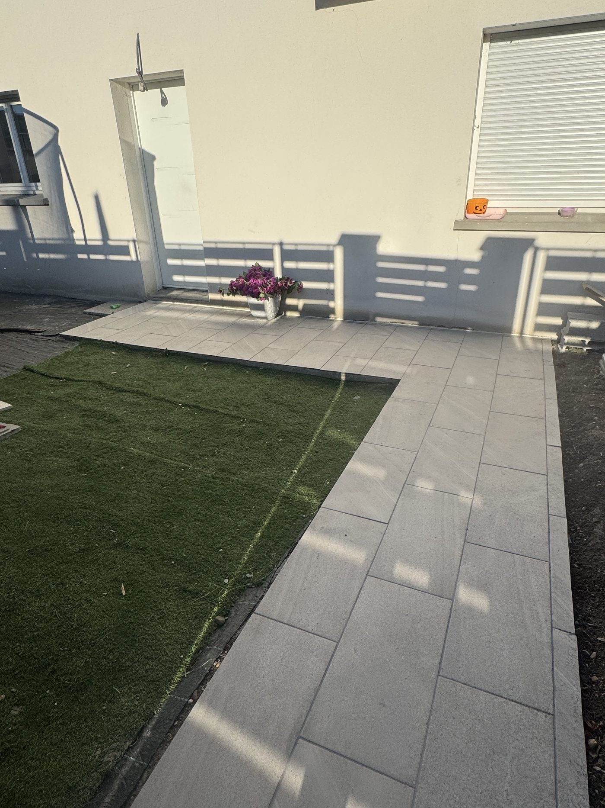
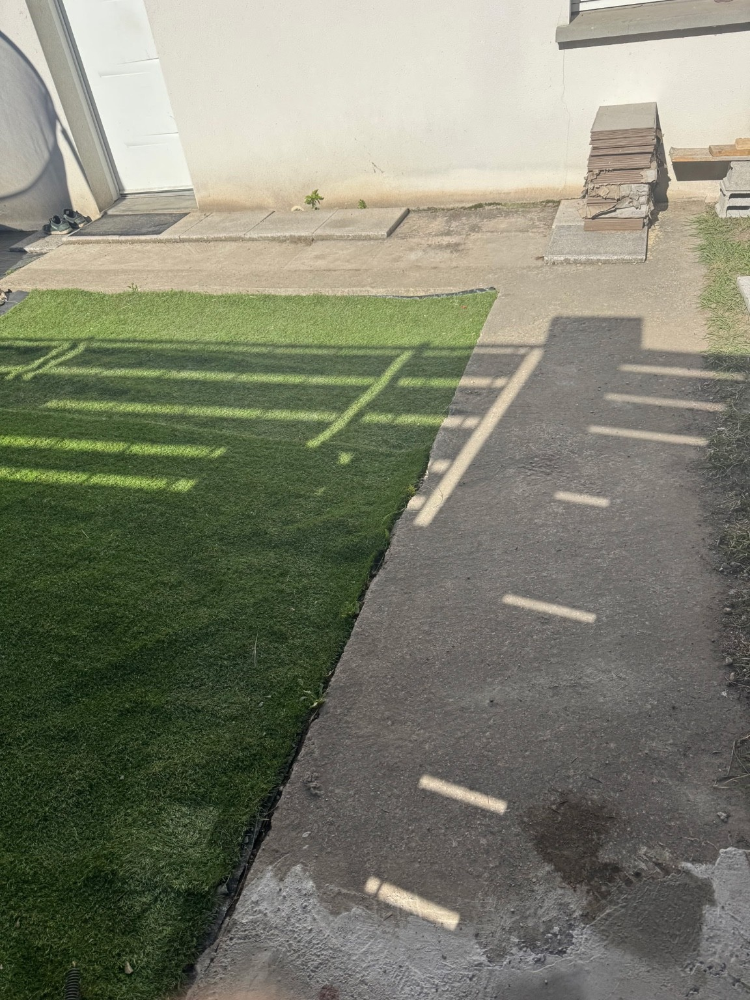
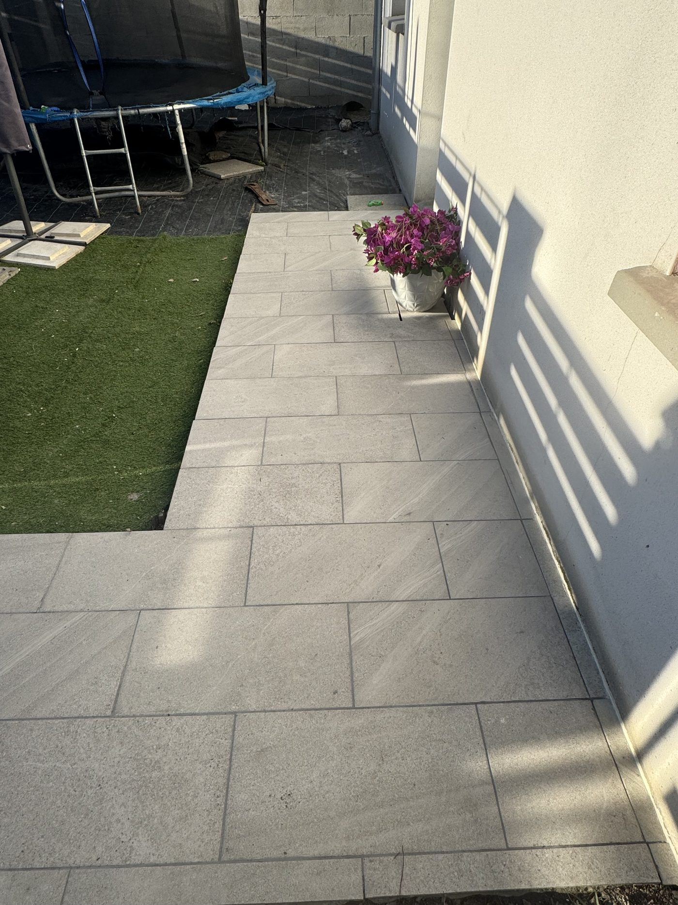
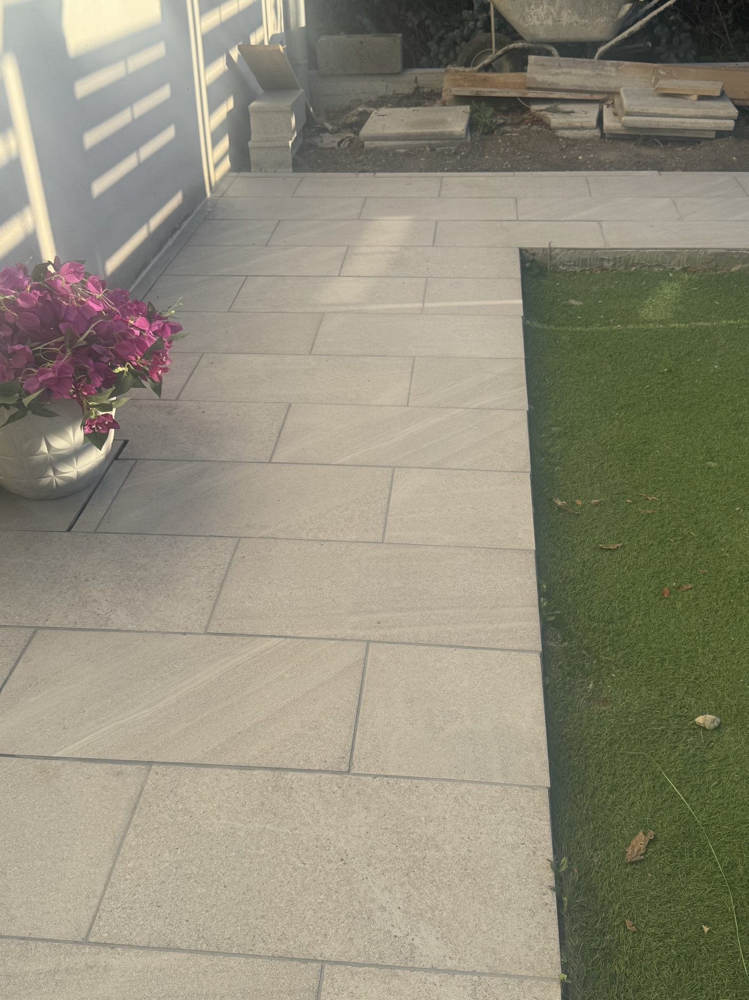

Carrelage intérieur
Pose au sol et au mur, calepinage, découpes et finitions. Des petits aux grands formats.
LL Carrelage Conception · Artisan en Seine-et-Marne (77)
Carrelage intérieur, faïence, salle de bain et terrasse. À Villeneuve-Saint-Denis (77174), en Seine-et-Marne (77), et dans un rayon d’environ 30 km.
Un projet bien préparé. Des finitions soignées.

Réalisations
Un même chantier, avant et après les travaux : découvrez la terrasse transformée, du support initial aux finitions du carrelage.



Au-delà du résultat visible, une pose se prépare : état du support, alignements, découpes et joints sont étudiés selon votre chantier. Retrouvez ces points sur notre page consacrée au carrelage de terrasse.
Les prestations
Des travaux adaptés à votre intérieur comme à vos extérieurs, en neuf ou en rénovation.
Pose au sol et au mur, calepinage, découpes et finitions. Des petits aux grands formats.

Carrelage extérieur, préparation du support et prise en compte des pentes d'écoulement.

Carrelage, faïence et étanchéité. Une rénovation soignée, adaptée à votre pièce.

Cuisine, crédence ou salle de bain : une pose précise et des raccords propres.

Retrait de l'ancien carrelage et préparation pour accueillir votre nouveau revêtement.

Contrôle, préparation et ragréage du sol avant la pose du carrelage.
Un projet de douche carrelée ? Découvrir la douche italienne
Mon engagement
Bonjour, je suis Ludovic, artisan indépendant. Je réalise vos travaux de carrelage avec sérieux, précision et le souci du détail. Chaque chantier est réalisé comme si c'était chez moi.
Des conseils clairs, un espace de travail maintenu propre et une attention particulière portée à chaque détail.
Échangeons sur votre projetVous présentez vos travaux par téléphone, sur WhatsApp ou avec le formulaire.
Nous parlons du support, de vos attentes et des contraintes du chantier.
Votre demande est étudiée personnellement pour définir les travaux à prévoir.
Une fois le projet convenu, place aux travaux et aux finitions.
Un premier échange
Demandez-moi un rappel sur WhatsApp. Vous pouvez préciser votre commune et le type de travaux, sans remplir le formulaire détaillé.
WhatsApp s’ouvre avec un message préparé. Envoyez-le pour que je reçoive votre demande.
Votre projet
Répondez à quelques questions pour me transmettre les informations nécessaires à votre devis.
Vous préférez un échange rapide ?Avis clients
Quelques retours de clients après leurs travaux de carrelage.
Un professionnel très sérieux, à l’écoute de son travail et impliqué. Je recommande sans hésitation !
Satisfait des travaux réalisés
Carrelage extérieur
Avis Travaux.comZone d'intervention
Depuis Villeneuve-Saint-Denis (77174), LL Carrelage Conception accompagne vos travaux en Seine-et-Marne (77), dans un rayon d’environ 30 km.
En neuf comme en rénovation : carrelage intérieur, terrasse, salle de bain, douche italienne et faïence. La dépose de l’ancien carrelage et la préparation du support sont étudiées selon l’état de votre chantier.
Questions fréquentes
Oui, tous les devis sont gratuits et sans engagement.
J'interviens à Villeneuve-Saint-Denis (77174) et dans un rayon d'environ 30 km autour, selon le projet.
Vous pouvez fournir votre propre carrelage ou être accompagné dans son choix. Je m'adapte à votre projet.
Je m'engage à répondre à votre demande dans les meilleurs délais, généralement sous 24 à 48 heures.
Oui. Décrivez votre projet dans le formulaire et transmettez votre récapitulatif sur WhatsApp. LL Carrelage Conception étudiera votre demande pour vous répondre avec une estimation personnalisée.
Vous pouvez me joindre par téléphone, via WhatsApp ou grâce au formulaire de contact disponible sur le site.
Contact
Une pièce à rénover, une terrasse à carreler ? Décrivez-moi votre projet pour préparer votre devis gratuit.